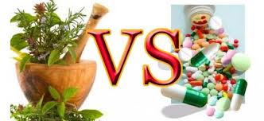

POSITIF NEGATIF NYA OBAT HERBAL DAN KIMIA
Positif Negatif antara Obat Herbal dan Kimia >> Saat ini banyak masyarakat yang masih kurang paham akan perbedaan obat herbal dengan obat kimia. Umumnya mereka hanya tahu obat kimia dapat menyembuhkan penyakit secara langsung, sedangkan obat herbai herbal sebagai alternatif jikalau obat kimia tidak dapat menyembuhkan penyakit yang dideritanya.
Akibat kurangnya pengetahuan ini, yang juga dialami olah banyak dokter yang berkeyakinan jika obat kimia lebih efektif ketimbang obat herbal. Akibatnya masyarakat hingga kini lebih tersugesti jika sakit sebaiknya minum obat kimia ketimbang obat herbal.
Tentu semuanya kembali kepada positif negatif obat kimia, jika digunakan sesuai dengan aturan konsumsi. Demikian pula dengan obat herbal, sebenarnya obat herbal lebih memiiki kemampuan mengobati berbagai penyakit akan tetapi memerlukan proses yang cukup lama untuk mengobati penyakitnya tersebut, tidak seperti obat kimia yang sekaligus sembuh.
Pada kesempatan kali ini kami akan membahas dan memberikan penjelasan mengenai positif/ negatif (baik/buruknya) obat herbal dan obat kimia. Untuk itu, simak selengkapnya dibawah ini.

Pengobatan tradisional merupakan suatu metode yang digunakan untuk berusaha menyembuhkan pasien dengan tidak menggunakan metode kedokteran melainkan menggunakan obat-obatan tradisional. Obat tradisional ini bisa berasal dari hewan, tanaman, dan mineral. Umunya obat tradisional berasal dari tanaman, padahal dosis yang diperlukan bila menggunakan tanaman lebih besar dibanding dengan hewan dan mineral. Saat ini pengobatan dengan metode tradisional tersebut mulai digemari masyarakat sebagai alternatif pengobatan apabila mereka merasa tidak puas dengan hasil yang didapatkan melalui metode kedokteran. Meskipun begitu terdapat kontraindikasi dalam pengobatan tradisional. Hal ini dikarenakan belum adanya penelitian lebih dalam mengenai efek samping baik positif maupun negatif terhadap metode dan obat tradisional yang digunakan.
Adapun Kelebihan dari Obat Herbal antara lain :
a. Tidak ada efek samping jika digunakan pada dosis normal.
Hal ini terjadi karena obat herbal tersusun oleh bahan-bahan organik yang kompleks. Dengan kata lain obat herbal dapat dianggap sebagai makanan yang berarti bahan yang dikonsumsi guna memperbaiki organ atau sistem yang rusak. Kelebihan obat herbal yang digunakan tentu menyebabkan efek samping seperti halnya kelebihan makanan. Sebagai hasilnya, sebagai kuncinya, dosis yang dianjurkan untuk penggunaan herbal adalah dosis tradisional dan sedikit dikurangkan.b. Efektif, bahkan untuk penyakit yang sulit diobati secara medis.
Berdasarkan pengalaman turun-temurun yang tertulis maupun lisan, dan kemudian dipelajari dari berbagai aspek seperti botani, kimia dan farmakologi. Pendekatan dalam penggunaan herbal ditekankan pad aspek farmakologi yang merupakan fungsi herbal tersebut dalam proses pengobatan.c. Harga murah dan dapat ditanam sendiri.
Terutama jika kita dapat menanam sendiri dengan membuat tanaman obat keluarga (TOGA) yang meliputi tanaman untuk pengobatan dan pemeliharaan kesehatan. Harga Akan meningkat jika obat herbal itu diperoleh dalam bentuk simplisia yang dikeringkan. Akan meningkat lagi jika dikonsumsi dalam bentuk the atau kapsul. Bahkan akan menjadi cukup tinggi jika dalam bentuk ekstrak.d. Aplikasinya lebih sederhana.
Jika diagnosa sudah jelas maka pengobatan dapat dilakukan di rumah dengan bantuan anggota keluarga yang lain. Bantuan dokter dibutuhkan untuk diagnosis yang benar berdasarkan data laboratorium. Rekomendasi terapi dapat diberikan oleh dokter yang juga herbalis, tetapi perawatannya bisa di rumah oleh anggota keluarga.Sedangkan Kelemahan dari Obat Herbal adalah :
a. Minimnya uji klinis
Tak seperti obat-obatan yang mengandung bahan kimia, obat herbal jarang di uji secara klinis karena pada dasarnya masyarakat telah percaya obat tersebut dapat menyembuhkan penyakit tertentu. Keyakinan akan khasiat obat telah mereka dapatkan berdasarkan pengalaman dari generasi sebelumnya maupun dari berbagai informasi yang tersebar secara lisan. Selain itu, masyarakat juga telah mempercayakan tingkat keamanan obat yang bahannya berasal dari alam ini. Hal inilah yang akhirnya membuat obat herbal jarang sekali di uji secara klinis. (Baca juga: Cara mengatasi rambut rontok secara alami)b. Efek terapi akan terasa lebih lama
Hasil terapi dan efektivitas yang di hasilkan oleh obat herbal akan terasa lebih lama jika di bandingkan dengan obat kimia. Sebab, bahan herbal tergolong dalam bahan yang lemah. Selain itu, jarang sekali ada data yang mampu memberikan informasi secara pasti tentang penyerapan, metabolisme, administrasi, dan ekskresi dari obat herbal setelah dikonsumsi.
Sesuai dengan perkembangan zaman yang sudah modern dan teknologi semakin canggih tentunya semua orang membutuhkan apa saja ingin secara cepat dan instan. Kita ambil contohnya yaitu Obat. Mungkin berbagai macam obat sangatlah banyak namun yang kita ketahui obat dibedakan menjadi dua yaitu Obat herbal/ tradisional dan obat kimia/sintetis. Tentunya kedua obat itu sama tujuan yaitu untuk mengobati, namun adalah salah satu perbedaan. Di artikel saya kali ini saya akan membahas perbedaan antara Obat herbal dengan Obat Kimia.
Obat Kimia yaitu obat yang mempunyai campuran bahan kimia yang tidak disintesis di dalam tubuh. Seperti obat yang beredar diwarung dan apotek. Dengan memiliki ciri-ciri seperti berikut ini : Bersifat paliatif, artinya obat ini akan menyembuhkan penyakit, tetapi bila obat tersebut terjadi pengendapan akan menjadi racun yang berbahaya. Bersifat sympthomatis, artinya obat ini hanya ditujukan untuk penyakit itu saja dan hanya menghilangkan gejalanya. Diproduksi menggunakan alat cangging dan tentunya tercampur bahan kimia lain. Reaksi penyembuhan yang cepat, namun jika dikonsumsi secara terus menerus setiap waktu maka akan beresiko melemahkan organ tubuh yang lain. Hanya menyembuhkan penyakit yang bersifat akut. Memiliki efek samping yang menimbulkan iritasi lambung, hati, ginjal, dll.
Kelemahan Obat Modern atau Obat Kimia :
a. Efek samping.
Terdapat efek samping dari obat kimia yang bisa berupa efek samping langsung maupun tidak langsung atau terakumulasi. Hal ini terjadi karena bahan kimia bersifat anorganik dan murni sementara tubuh bersifat organik dan kompleks. Maka bahan kimia bukan bahan yang benar-benar cocok untuk tubuh. Penggunaan bahan kimia pada tubuh dianggap sebagai sesuatu yang tidak terhindarkan dan digunakan secara terbatas yang dapat diterima dan ditoleransi oleh tubuh.b. Sering kurang efektif untuk penyekit tertentu.
Beberpa penyakit memang belum ada obatnya, obat yang ada hanya bersifat simptomatik dan harus diminum seumur hidup. Beberapa penyakit belum diketahui penyebabnya. Banyak pasien secara rutin pergi ke dokter tanpa perbaikan yang signifikan bahkan semakin buruk keadaannya.c. Harga yang mahal karena faktor impor.
Hampir semua obat kimia yang kita gunakan berasal dari luar. Hal ini terjadi karena untuk menghasilkan obat kita membutuhkan teknologi tinggi, biasa investasi yang tinggi dan waktu penelitian yang lama. Alasan lain di impor obat adalah perlunya kepercayaan atas produsen obat. Sampai saat ini kepercayaan terutama ada pada beberapa negara yang dikenal produsen obat. Bahan mahal yang diipor terdiri dari obat jadi, bahan baku obat, bahan pengemas obat, teknologi, peralatan dan mesin-mesin, tenaga ahli dan tenaga terampil. Tingginya harga terjadi karena impor menggunakan mata uang asing yang berfluktuasi sesuai kurs dan juga membuat ketersediaan tidak menentu.Sedangkan Kelebihan dari Obat Kimia adalah :
a. Reaksi cepat untuk penyembuhan penyakit
Mungkin hanya itu saja kelebihan dari obat kimia, dan kebanyakan memang dampak negatif obat kimia yang digunakan terus menerus sehingga akan membuat dampak buruk yang terjadi pada tubuh seperti melemahnya organ tubuh, dll.
Untuk itu mana kah yang harus anda jadikan pegangan dalam melakukan pengobatan ?? apakah obat herbal atau obat kimia ?? Berdasarkan hasil dari penelitian sih, semua lebih mengarah pada obat herbal atau pengobatan herbal yang dampaknya lebih condong ke positif tapi tidak menutup kemungkinanan pengobatan herbal pun pasti ada kekurangannya. Maka dari itu, anda perlu selektif dalam memilih obat herbal atau kimia yang digunakan untuk penyakit yang diderita, jangan sampai obat yang anda konsumsi bukan menyembuhkan penyakit melainkan menjadi faktor penyebab penyakit.